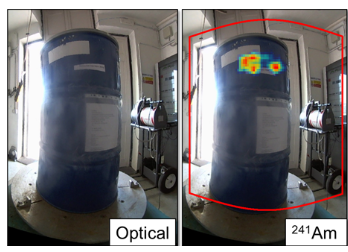
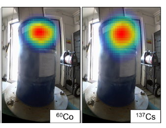

Radioactive Waste Management


H3D H420 제품 사용
Cs-137, Co-60, Am-241 방사선원들을 위쪽에 집중 배치
참가자들이 측정을 통해 선원의 위치를 찾도록 함.
H420 는 폐기물 드럼에 감추어져 있던 Cs-137, Co-60, Am-241 방사선원들의 종류와 위치를 파악할 수 있었음.
후처리 프로그램의 SourceTerm 기능을 이용 선원별 세기와 방사선량을 자세히 분석할 수 있음.